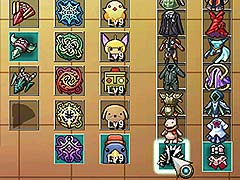

「マッスルギア」は初めからスロットが存在しますが、「デモンジャケット」、「ピンキィスター」は条件を満たさないとスロットが解放されません。
(解放前)

(解放後)
「デモンジャケット」は「レベルプレートG」を使用した状態でエキサイティングバトルシミュレーターの全てのボスを倒すと入手できます。
ちなみに「レベルプレートG」を使用した状態でボスを倒すと、エキサイティングバトルシミュレーターの画面に王冠のマークがつきます。
(王冠マーク)

(レベルプレートG)
「ピンキィスター」は夢幻迷宮 IIの40 階にいるボスを全て倒し、「うさぎの耳」、「うさぎの手」、「うさぎの尻尾」、および「ピンクの衣装」を入手すると装備できるようになります。
「マッスルギア」は、G-コロッセオの <<G-販売機>> で売っている「カプセルトイ」のフィギュアを全てそろえると手に入ります(敵が落とすフィギュアでありません)。「カプセルトイ」はガチャガチャのようなもので、手に入るフィギュアは完全にランダムなのでいくらつぎ込めば手にはいるかは不明です。
管理人は売値が半額になる「イナセなお面」を装備した状態でも300万ペンネ以上をつぎ込んだので、それくらいは覚悟した方がいいです。
性能は「ブレードギア」＋「バーニングギア」という強力なもので、文字通り敵を蹴散らして進むことができます。

(イナセなお面)